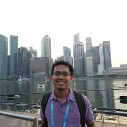

Currently
I’m a Principal Software Engineer at Doitpay, where I build a payment gateway on Go microservices. In my own LinkedIn words, I’m “building stuff and getting things done.”
About
A programmer at heart, I build software that is easy to maintain and scales without drama. Over the years I’ve worked across languages with very different personalities — dynamically and statically typed, strong and weak — which taught me to pick the tool that fits the problem rather than the other way around.
I started, like most of my generation, in object-oriented programming and its design patterns. Discovering functional programming was the perspective shift that changed how I design software: it gave me new ways to reason about state, composition, and correctness. These days I reach for Haskell, Scala, and Rust whenever I can — and this very site is compiled from Markdown by a small Haskell program, because of course it is.
Experience
Principal Software Engineer · Doitpay
Building a payment gateway on Go microservices — building stuff and getting things done.
Senior Software Development Engineer · GovTech Edu
- Built the integrations between SIPLah, an e-procurement platform for schools, and marketplace partners.
- Built a data pipeline and monitoring dashboard for SIPLah transactions, enabling auditing by ministry agencies.
- Created the integration between Arkas, the administrative platform for schools, and SIPLah for streamlined procurement.
Senior DevOps Engineer · Bukalapak
- Tech lead for a five-person team maintaining and migrating one of Bukalapak’s largest legacy monolithic services to the cloud.
- Migrated the CI jobs runner from CircleCI to a self-managed GitLab CI runner — faster builds and thousands of dollars saved every month.
- Built automation tools and monitoring systems for the cloud-migration effort.
Software Reliability Engineer · Bukalapak
- Developed tools that put the twelve-factor methodology into practice across microservices.
- Contributed to service standards for building scalable, highly available, and observable services.
- Handled operations work: incident management and post-mortem analyses.
Software Engineer · Bukalapak
- Refactored the Ruby web application to a more reliable authorization scheme in my first three months.
- Joined Bukalapak’s first data team to build infrastructure for data scientists — dashboards and automation for querying data.
- Returned to product work owning transaction and payment integration backends; the proudest was building the first host-to-host bank integration.
System Engineer · PT GudPoin Indonesia
- Managed the startup’s AWS infrastructure — EC2, Elastic Beanstalk, RDS, and code repositories.
- Built a simple deploy pipeline that shipped web apps on every merge to master.
- Handled bug fixing and maintenance across the PHP codebase, and picked up Objective-C and Xcode along the way.
Software Engineer / Research Assistant · RC-OPPINET ITB
- Developed simulation and optimization software for the petroleum industry.
- Created an in-house GUI micro-framework with Python and PySide.
- Ran the lab’s development infrastructure — Git repositories and Redmine.
Software Developer · Teknik Geofisika ITB
- Built software for simulating and visualizing gravity anomalies on boreholes and oil-and-gas fields.
- Migrated codebases from C++ with MFC to C# with WPF.
- Implemented gridding and kriging algorithms, with contour, heat-map, and 3D visualizations.
Portfolio
Education
Institut Teknologi Bandung (ITB) · Master of Engineering in Computer Engineering
Focused on software engineering and distributed systems.
Institut Teknologi Bandung (ITB) · Bachelor of Science in Mathematics
Specialization in combinatorics. Activities: HIMATIKA ITB and Keluarga Mahasiswa Muslim Matematika ITB.
Certifications
- Functional Programming Principles in Scala — École Polytechnique Fédérale de Lausanne (EPFL), 2020
- Functional Program Design in Scala — École Polytechnique Fédérale de Lausanne (EPFL), 2020
Selected Projects
Skills
Languages
Cloud & Infrastructure
Data & Streaming
Observability & Delivery
Kind Words
Mas Ardin is not just someone who gets tasks done — he deeply understands code quality and best practices, ensuring that the project was built on a solid foundation. He is highly reliable, knowledgeable, and proactive.
— Muhammad Rizky Habibi, via LinkedIn